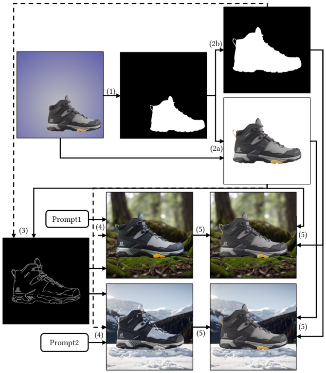
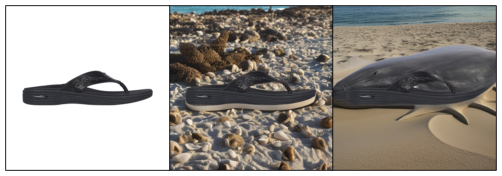

Dynamic Product Image Generation and Recommendation at Scale for Personalized E-commerce (面向个性化电商的规模化动态商品图像生成与推荐)
- 会议/期刊: RecSys 2024（Industry Track，3 页短文）
- 作者与机构: Ádám Tibor Czapp, Mátyás Jani, Bálint Domián, Balázs Hidasi（Taboola Budapest）
- 推荐链路定位: 精排后的呈现层/创意生成（不改变候选与排序模型，只改变被展示商品的图片）
- 研究方向: 生成式推荐与离散语义ID / 强化学习与动态探索推荐
- 论文原文: https://arxiv.org/abs/2408.12392v1
- 开源代码: huggingface/diffusers（仅依赖的生成库开源，业务管线未开源）
TL;DR (1分钟核心速览)
动态商品广告（DPA/重定向）无法为每个 item × 版位 × 宽高比 定制创意，只能直接投放商家原始商品图。本文将 Stable Diffusion 背景生成与 LinUCB 上下文老虎机串联：用商品边缘图作为 ControlNet 约束、在商品掩码下采样背景，再把原商品像素原样贴回，从而彻底规避 inpainting 的"虚拟部件"伪影；随后按用户/商品/版位特征从品类级 prompt 池中选择背景。线上三阶段 A/B（CTR 为唯一主指标，均 \(p<0.05\)）显示：仅做位次自适应缩放定位\(+5\%\)，生成背景约\(+15\%\)，改进管线后相对原图\(+4\%\!\sim\!40\%\)（商家相关），prompt 个性化再\(+5\%\)。
Background & Motivation (背景与核心矛盾)
- 主流范式: 商品级广告创意 = 原始商品图 + 模板化设计元素，按版位裁切；创意设计高度依赖人工，无法随商品目录（数千至数万 SKU）线性扩展。
- 前人局限 1（保真性）: 朴素做法是在商品掩码外做 inpainting 外推背景，但扩散模型倾向于把商品"补全"为更大物体，产生向外延伸的虚拟部件与"悬浮商品"伪影——在电商场景中这属于结构性命中率事故，不可接受。
- 前人局限 2（稀疏性）: 用户–商品–版位三元组样本极稀疏，逐三元组训练个性化生成模型在数据与推理成本上均不可行。
- 核心洞察 (Key Insight): 广告位用户注意力不在创意上，对轻微瑕疵高度容忍，但对商品本体像素被篡改零容忍。因此正确策略是"主体绝对保真 + 不确定性全部推给背景"。
- 本文切入点: 把生成任务从"边界像素外推"重构为"形状一致下的背景合成"，再用轻量 bandit 承担个性化，而非训练用户条件生成模型。
Method (核心方法设计)
1. 整体框架 (Overall Architecture)
输入单张商家商品图，管线五步闭环：(1) 目标检测得到商品掩码；(2) 按目标版位缩放与定位（可选去掉原背景）；(3) 边缘检测，并用掩码强化轮廓；(4) 以边缘图 + 商品外观双条件驱动 Stable Diffusion 生成背景与"代理物体"；(5) 将原始商品像素贴回生成图上覆盖代理区域。生成结果以 (image, prompt, size) 三元组为键异步缓存，首请求只入队并降级返回原图，生成完成后回调写缓存。个性化环节在曝光时由 LinUCB 依上下文从该品类预定义 prompt 池中选背景，缓存命中后即为该用户返回对应变体。
flowchart TD
A["原始商品图"] --> B["目标检测 + 商品掩码"]
B --> C["按版位缩放 / 定位"]
C --> D["边缘检测(掩码强化轮廓)"]
D --> E["ControlNet 约束扩散生成背景 + 商品外观条件"]
E --> F["原商品像素回贴 + 异步队列缓存"]
F --> G["LinUCB 按上下文选 prompt 曝光"]
2. 关键设计拆解 (Key Designs)
- 边缘约束生成替代 inpainting（保真核心）：inpainting 在掩码边界做像素外推，模型必然"续写"商品轮廓外延产生伪影。本文改为在掩码下方也生成一个代理物体，由 Canny 边缘条件约束其形状与落点，随后用真实商品像素替换。形式上是 ControlNet 的零初始化残差注入 \(\mathbf{h}=\mathcal{F}(\mathbf{z}_t)+\mathcal{Z}\big(\mathcal{E}(\mathbf{c}_{\text{edge}})\big),\quad \mathcal{Z}\ \text{零初始化}\) 直觉：把"像素级外推"降级为"形状级复制"，模型无需保证边界像素连续，伪影与悬浮感随之消失。

-
商品外观条件化（去轮廓线）：仅用边缘约束会在商品与背景交界留下可见轮廓线、且背景色板与商品割裂。本文将商品图作为外观条件一并注入，使背景色调与构图在不改 prompt 的前提下自动向商品色系靠拢（图2 展示同 prompt 下的颜色变化）。这相当于用商品自身统计量替代 prompt 工程，避免为每种颜色单独维护模板。
-
LinUCB prompt 选择与训练/推理开销：对每个 prompt 臂 \(a\) 维护岭回归解与置信上界，在线闭式更新，无需离线训练、无负采样： \(\hat{\boldsymbol{\theta}}_a=(\mathbf{D}_a^{\top}\mathbf{D}_a+\lambda\mathbf{I})^{-1}\mathbf{D}_a^{\top}\mathbf{r}_a,\quad a_t=\arg\max_a\Big[\hat{\boldsymbol{\theta}}_a^{\top}\mathbf{x}_t+\alpha\sqrt{\mathbf{x}_t^{\top}(\mathbf{D}_a^{\top}\mathbf{D}_a+\lambda\mathbf{I})^{-1}\mathbf{x}_t}\Big]\)扩散模型直接复用预训练权重（噪声回归目标\(\mathcal{L}=\mathbb{E}_{t,\boldsymbol{\epsilon}}\|\boldsymbol{\epsilon}-\boldsymbol{\epsilon}_\theta(\mathbf{z}_t,t,\mathbf{c})\|_2^2\)，无领域微调），bandit 部分为毫秒级矩阵运算。瓶颈在生成：单图秒级，远超 RT 预算，故采用队列 + 掩码缓存 + 相似宽高比归组 + 人工干预兜底来控制时延与成本。
Experimental Setup & Evaluation Protocol (实验设置与评估协议)
- 场景与数据: Taboola 线上重定向广告；单个商品目录规模数百至数万 SKU，以服饰类目（服装、鞋、配饰）为主；多商家、多版位、多宽高比。
- 数据集统计: 本文为工业短文，未发布离线数据集、未报告交互量统计，全部验证来自线上流量。
- 划分与防穿越: 采用线上随机分流 A/B（control / treatment 同源流量并发），Phase I 覆盖 2023-09 至 2024-02，Phase II、Phase III 为后续独立时段实验；无
Leave-One-Out或时间戳离线切分。 - 评测协议: 主指标 CTR（创意只直接影响点击），辅以 conversions、CPA 作为间接收益观察。非 Full-Ranking 或 Sampled Ranking 协议（任务不是排序），也未做离线召回/排序基准对比。
- 对照与显著性: Phase I 三臂（原始图 / 仅定位缩放 / 生成背景）；Phase II 为旧管线 vs 改进管线 vs 原始图；Phase III 为 LinUCB 选 prompt vs 随机选 prompt（每品类仅 3 个候选 prompt）。全部 CTR 增益在 \(p<0.05\) 下显著。
Key Experimental Results (实验关键数据)
1. 主实验对比 (Main Results)
| 阶段 | 对照组 (Control) | 处理组 (Treatment) | 相对 CTR 提升 | 显著性 |
|---|---|---|---|---|
| Phase I | 原始商品图 | 仅位次自适应缩放/定位 | ≈ +5% | \(p<0.05\) |
| Phase I | 原始商品图 | 生成背景（首版管线） | ≈ +15% | \(p<0.05\) |
| Phase II | 首版管线 | 改进管线（边缘约束 + 外观条件） | 正增益（图4 右上，量级 ≤15%） | \(p<0.05\) |
| Phase II | 原始商品图 | 改进管线生成图 | +4% ~ +40%（商家/版位/素材相关） | \(p<0.05\) |
| Phase III | 随机 prompt 背景 | LinUCB 个性化 prompt 背景 | ≈ +5% | \(p<0.05\) |
2. 消融实验 (Ablation Study，以阶段式增量拆解代替)
| 累积配置 | 相对原始图 CTR | 移除该组件的影响 |
|---|---|---|
| 原始商品图（baseline） | 0% | — |
| + 位次自适应缩放/定位 | ≈ +5% | 几何规范化本身即有效，非生成效应 |
| + 生成背景（inpainting 版） | ≈ +15% | 增益存在但受伪影拖累 |
| + ControlNet 边缘约束替代 inpainting | 正增益（vs 首版管线） | 消除虚拟部件/悬浮伪影 |
| + 商品外观条件化 | 定性改善（图2） | 减少可见轮廓线、色板自适应 |
| + LinUCB prompt 个性化 | 再 +5% | 换回随机 prompt 即回退到 Phase II 水平 |
3. 关键实验发现 (Key Findings)
- "呈现"是与相关性并列的一阶因子，且几何项近乎免费：不做任何生成、仅按版位重排商品位置与缩放就拿到 \(\approx 5\%\)CTR，与整套 prompt 个性化（\(+5\%\)）同量级，说明工业链路上存在大量被忽视的低成本视觉规范化收益。
- 结构性伪影是生成图的唯一硬约束：把 inpainting 换成"边缘约束 + 代理物体 + 原图像素回贴"后，相对原始图的增益才稳定扩展到 \(+4\%\!\sim\!40\%\)，且失败案例从"商品变形"退化为可容忍的背景瑕疵——保真度而非美感决定了这套方案能否上生产。
- 收益高度商家相关，个性化收益已接近上限：同一管线在商家维度差异可达一个数量级（图4 左下），说明技术本质是"素材质量放大器"；Phase III 仅 \(+5\%\) 且每品类只 3 个候选 prompt，提示瓶颈在候选背景多样性而非选择算法。
Highlights & Limitations (亮点、对比与审稿批判)
- 与代表作对比: 相比工业界 DCO/创意优选工作（仅在既有素材池上做选择，如本文引用的 bandit 选创意方案 [1]），本文把生成模型放进在线链路，把候选空间从有限素材扩展到连续背景空间；相比通用 ControlNet/inpainting 应用，其本质区别是提出"主体像素零改动"的硬工程约束与异步降级架构。
- 可迁移亮点: (i) "生成代理物体再回贴真实主体"可用于任何需要主体保真的合成任务（虚拟试穿、家具摆放、UGC 图美化）；(ii)
(输入, 条件, 尺寸)三元组异步缓存 + 首请求降级，是把秒级生成模型接入毫秒级推荐系统的通用范式。 - 审稿级局限批判: (i) 全文仅 3 页，缺少每个商家/版位的绝对值表、置信区间与流量规模，除 \(p<0.05\) 外无效应量统计，online-only 评估也无法排除新奇效应（novelty effect）随时间衰减；(ii) 生成延迟秒级导致首曝光必然退化、冷启动 SKU 预热成本未量化，且 prompt 池极小（3 个/品类）、AI 生成图的版权合规与失败兜底仍依赖人工介入。
Rating (四维评分)
- 方法创新性 (Novelty): ⭐⭐⭐ （边缘约束 + 代理物体回贴是对现有扩散工具链的巧妙工程重构，bandit 部分为成熟 LinUCB，无新理论但组合方式有实用巧思）
- 评估协议与实验扎实度 (Protocol & Experiments): ⭐⭐⭐ （三阶段线上随机 A/B、含随机 prompt 对照组且报告显著性，但无离线基准、无逐商家数值表、缺效应量与流量规模）
- 写作与数学规范度 (Clarity & Rigor): ⭐⭐⭐⭐ （三页篇幅内把动机、五步管线、生产约束讲得清楚，图示到位；但仅给出 LinUCB 概念性描述，无超参 \(\alpha,\lambda\) 与收敛讨论）
- 工业落地与复现价值 (Industrial & Practical Value): ⭐⭐⭐⭐ （异步队列 + 三级缓存 + 相似宽高比归组的部署方案可直接复用；但业务管线未开源，复现需自建检测/掩码/审核链路）